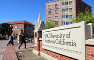
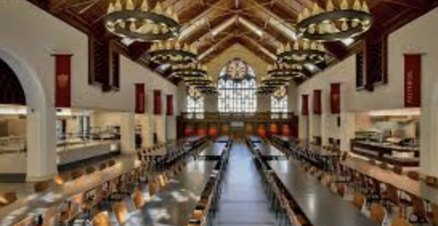

加州旅行计划
5月8号 周三
到达
住宿 学校宾馆
- 你们这班飞机 机型空客359 晚点率只有10% 大概率准时到达
- 飞机全称11小时50分钟 10427公里 合理规划好睡眠时间
- 飞机上有两顿正餐 建议按照太阳光照作息
- 5月8号 北京时间20:40 上飞机 太平洋时间17:30 下飞机 大致相当于用12小时度过一整天时间，可以理解为时间变成了2倍速，可以在飞机上睡6个小时 然后起床吃点心 看个2小时电影 吃中饭，再睡个午觉 吃完饭 然后准备降落。洛杉矶很大，在降落前半小时就可以看到建筑群。
5月9号 周四
中饭 学校食堂
晚饭 sun nong dan 韩式辣牛肉
住宿 学校宾馆
- 今天主要是为了倒个时差，很可能一觉睡到中午或者早上很早醒来，各人自己调整不必强求，早饭中饭可以在学校食堂。学校食堂装潢很有趣。今天主要是为了好好休息。
- 借两辆车，请各位司机带好护照和驾照。
- sun nong dan 是在韩国都非常有名的辣牛肉餐厅，很多同学来洛杉矶第一顿都会去吃一趟。坐落在韩国城中心，非常有特色。去晚了可能要排很长时间的队。
- 晚上住宿可以想想有什么物资需要补充，我们可以去趟超市
|

|

|
| USC campus |
USC village cafe |